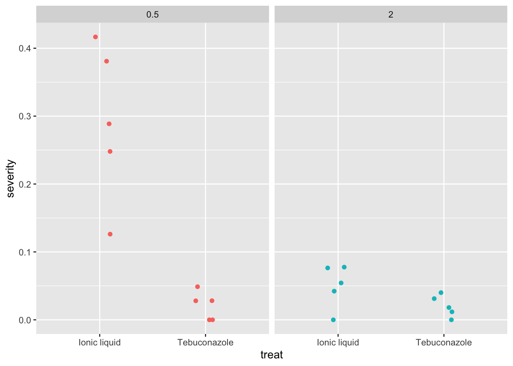
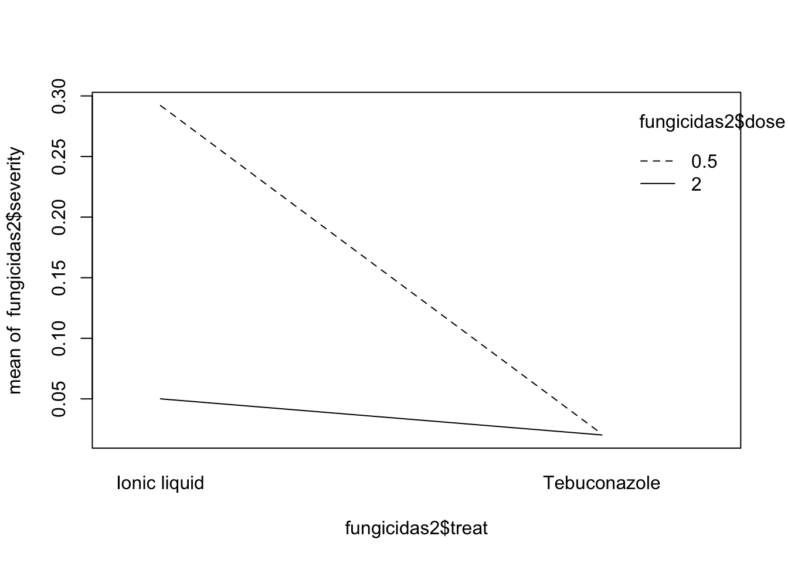
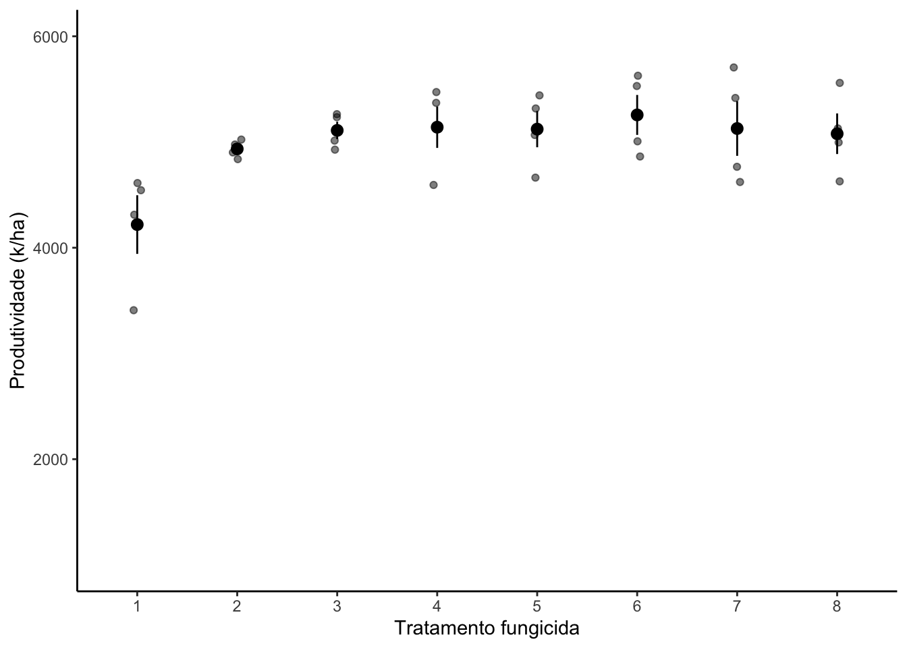
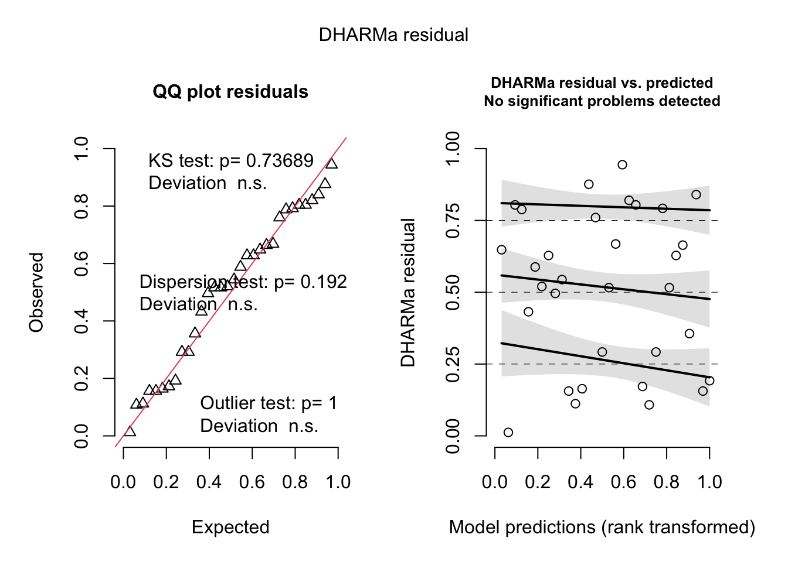
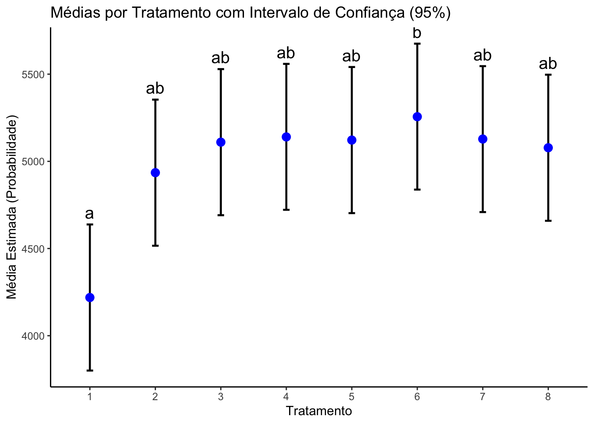
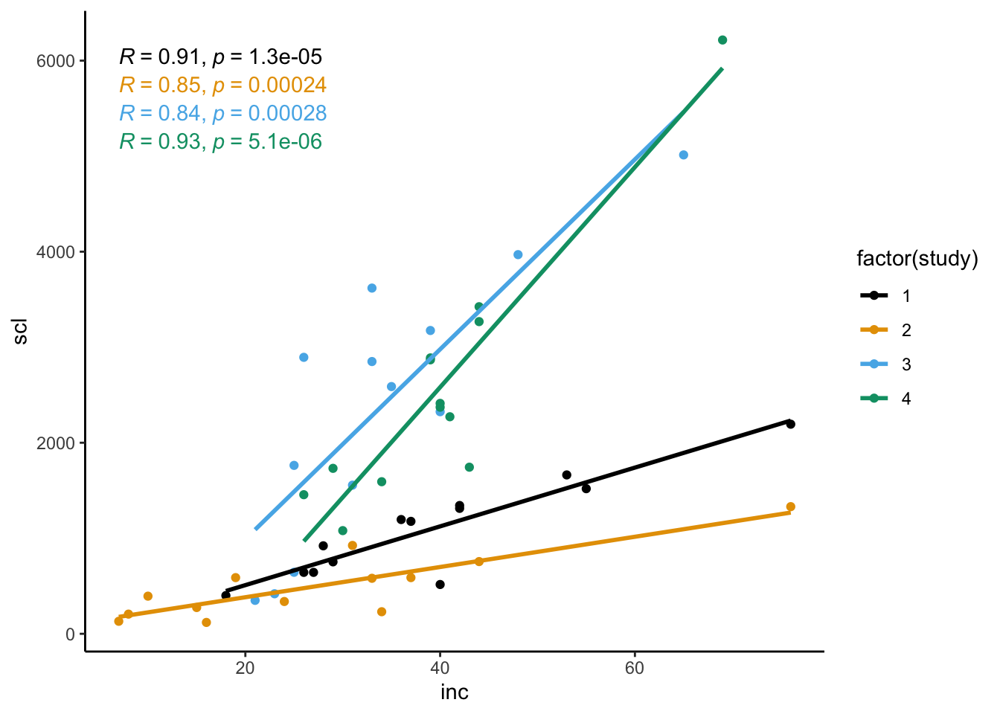
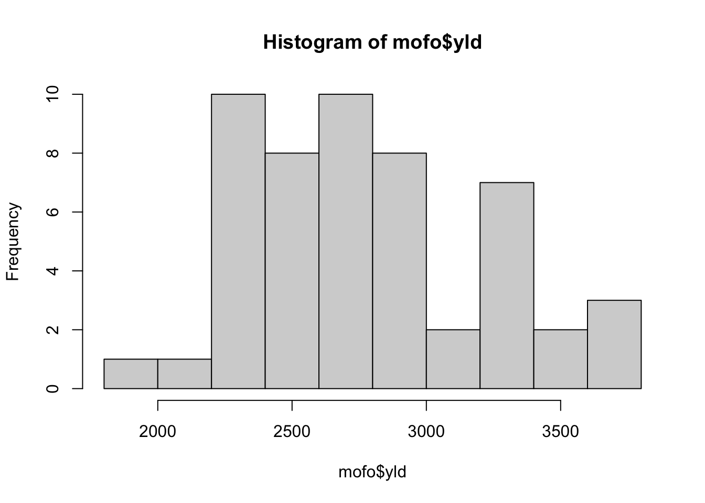
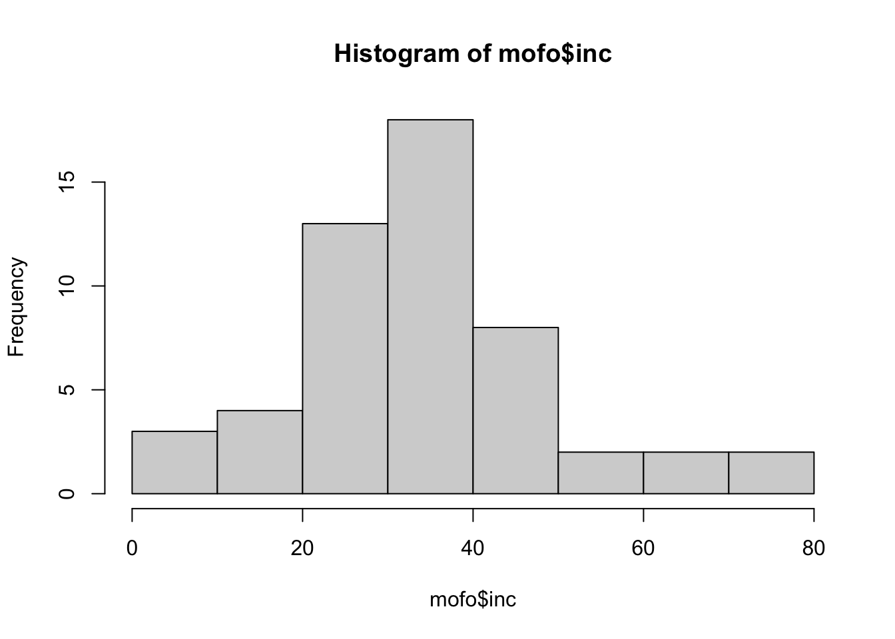

── Attaching core tidyverse packages ──────────────────────── tidyverse 2.0.0 ──
✔ dplyr 1.1.4 ✔ readr 2.1.5
✔ forcats 1.0.0 ✔ stringr 1.5.1
✔ ggplot2 3.5.2 ✔ tibble 3.3.0
✔ lubridate 1.9.4 ✔ tidyr 1.3.1
✔ purrr 1.1.0
── Conflicts ────────────────────────────────────────── tidyverse_conflicts() ──
✖ dplyr::filter() masks stats::filter()
✖ dplyr::lag() masks stats::lag()
ℹ Use the conflicted package (<http://conflicted.r-lib.org/>) to force all conflicts to become errors
library(ggplot2)fungicidas <-read_excel("dados_diversos.xlsx","fungicida_vaso") # fator dose vai ser qualitativo (só tem 2: 0.5 e 2); 2 respostas (severidade na planta e semente infectadas)fungicidas2 <- fungicidas |>mutate (incidencia = inf_seeds/n_seeds,dose =factor(dose))
1.1 Visualização
fungicidas2 |>mutate(dose =factor(dose)) |>ggplot(aes(treat, severity, color = dose))+geom_jitter(width =0.1)+facet_wrap(~ dose)+# separa os grágicos theme(legend.position ="none")

interaction.plot(fungicidas2$treat, fungicidas2$dose, fungicidas2$severity) # se cruza: tem interação, dose depende do fungicida

1.2 Modelo de análise
# Modelo 1m1 <-lm(severity ~ treat, data = fungicidas2)anova(m1)
Analysis of Variance Table
Response: severity
Df Sum Sq Mean Sq F value Pr(>F)
treat 1 0.11323 0.11323 9.8892 0.005603 **
Residuals 18 0.20610 0.01145
---
Signif. codes: 0 '***' 0.001 '**' 0.01 '*' 0.05 '.' 0.1 ' ' 1
# Modelo 2m2 <-lm(severity ~ dose, data = fungicidas2)anova(m2)
Analysis of Variance Table
Response: severity
Df Sum Sq Mean Sq F value Pr(>F)
dose 1 0.073683 0.073683 5.3991 0.03206 *
Residuals 18 0.245649 0.013647
---
Signif. codes: 0 '***' 0.001 '**' 0.01 '*' 0.05 '.' 0.1 ' ' 1
# Modelo 3: e a interação? Quando tem mais de 1 fator, roda ele primeiro# Modelo 3m3 <-lm(severity ~ treat * dose, data = fungicidas2)anova(m3) # interação siginificativa, a eficiência do produto depende da dose
library(multcomp) # Recomendado tabela com interação
Loading required package: mvtnorm
Loading required package: survival
Loading required package: TH.data
Loading required package: MASS
Attaching package: 'MASS'
The following object is masked from 'package:dplyr':
select
Attaching package: 'TH.data'
The following object is masked from 'package:MASS':
geyser
cld(medias_m3, Letters = letters)
dose = 0.5:
treat emmean SE df lower.CL upper.CL .group
Tebuconazole 0.0210 0.0273 16 -0.03690 0.0789 a
Ionic liquid 0.2921 0.0273 16 0.23420 0.3500 b
dose = 2:
treat emmean SE df lower.CL upper.CL .group
Tebuconazole 0.0202 0.0273 16 -0.03768 0.0781 a
Ionic liquid 0.0501 0.0273 16 -0.00781 0.1080 a
Confidence level used: 0.95
significance level used: alpha = 0.05
NOTE: If two or more means share the same grouping symbol,
then we cannot show them to be different.
But we also did not show them to be the same.
cld(medias_m4, Letters = letters)
treat = Ionic liquid:
dose emmean SE df lower.CL upper.CL .group
2 0.0501 0.0273 16 -0.00781 0.1080 a
0.5 0.2921 0.0273 16 0.23420 0.3500 b
treat = Tebuconazole:
dose emmean SE df lower.CL upper.CL .group
2 0.0202 0.0273 16 -0.03768 0.0781 a
0.5 0.0210 0.0273 16 -0.03690 0.0789 a
Confidence level used: 0.95
significance level used: alpha = 0.05
NOTE: If two or more means share the same grouping symbol,
then we cannot show them to be different.
But we also did not show them to be the same.
# se nao tivesse interação significativa, uma ANOVA para cada um, representa em gráficos (um de dose e um dos fungicidas)
Tratamento (Fungicida)
Dose 0.5
Dose 2.0
Ionic liquid
0,2921 Aa
0,0501 Ab
Tebuconazole
0,0210 Ba
0,0202 Aa
1.3 Dados Fungicida campo
campo <-read_excel("dados_diversos.xlsx","fungicida_campo")campo2 <- campo |>mutate(trat =factor(TRAT),bloco =factor(BLOCO)) |> dplyr::select(trat, bloco, PROD)
1.4 Visualização de dados
campo2 |>ggplot(aes(trat, PROD,))+geom_jitter( width =0.05, alpha =0.5)+ylim(1000, 6000)+stat_summary()+# adiciona media e erro padraotheme_classic()+labs( x="Tratamento fungicida",y ="Produtividade (k/ha)")
No summary function supplied, defaulting to `mean_se()`

1.4.1 Modelo ANOVA
m_bloco <-lm(PROD ~ trat + bloco, data = campo2)anova(m_bloco) # sem efeito do bloco
Analysis of Variance Table
Response: PROD
Df Sum Sq Mean Sq F value Pr(>F)
trat 7 2994142 427735 2.6369 0.0402 *
bloco 3 105716 35239 0.2172 0.8833
Residuals 21 3406384 162209
---
Signif. codes: 0 '***' 0.001 '**' 0.01 '*' 0.05 '.' 0.1 ' ' 1
# Premissasplot(simulateResiduals(m_bloco))

# Comparação da médiasmedias_m_bloco <-emmeans(m_bloco, ~ trat)cld(medias_m_bloco, Letters = letters)
trat emmean SE df lower.CL upper.CL .group
1 4219 201 21 3800 4638 a
2 4935 201 21 4516 5354 ab
8 5078 201 21 4659 5497 ab
3 5110 201 21 4691 5529 ab
5 5122 201 21 4703 5541 ab
7 5128 201 21 4709 5546 ab
4 5140 201 21 4722 5559 ab
6 5256 201 21 4838 5675 b
Results are averaged over the levels of: bloco
Confidence level used: 0.95
P value adjustment: tukey method for comparing a family of 8 estimates
significance level used: alpha = 0.05
NOTE: If two or more means share the same grouping symbol,
then we cannot show them to be different.
But we also did not show them to be the same.
# Gráfico pelo Geminilibrary(ggplot2)# 1. Preparar os dados do CLD (baseado no seu output)dados_cld <-data.frame(trat =factor(c(1, 2, 8, 3, 5, 7, 4, 6)),emmean =c(4219, 4935, 5078, 5110, 5122, 5128, 5140, 5256),lower.CL =c(3800, 4516, 4659, 4691, 4703, 4709, 4722, 4838),upper.CL =c(4638, 5354, 5497, 5529, 5541, 5546, 5559, 5675),group =c("a", "ab", "ab", "ab", "ab", "ab", "ab", "b"))# 2. Gerar o gráficoggplot(dados_cld, aes(x = trat, y = emmean)) +# Adiciona os dados brutos (jitter) - substitua 'df_original' pelo seu banco de dados# geom_jitter(data = df_original, aes(x = tratamento, y = resposta), # width = 0.1, alpha = 0.3, color = "gray") +# Adiciona o Intervalo de Confiançageom_errorbar(aes(ymin = lower.CL, ymax = upper.CL), width =0.1, size =0.8) +# Adiciona a Médiageom_point(size =3, color ="blue") +# Adiciona as letras de significância acima do IC superiorgeom_text(aes(label = group, y = upper.CL), vjust =-0.5, size =5) +# Estética do gráficolabs(x ="Tratamento", y ="Média Estimada (Probabilidade)",title ="Médias por Tratamento com Intervalo de Confiança (95%)") +theme_classic()
Warning: Using `size` aesthetic for lines was deprecated in ggplot2 3.4.0.
ℹ Please use `linewidth` instead.

1.5 Conjunto mofo
mofo <-read_excel("dados_diversos.xlsx","mofo")# Respostas: incidencias, massa esclerodio e produtividade#Study: experimentos diferenteslibrary(ggplot2)library(ggthemes)library(ggpubr)mofo|>ggplot(aes(inc, scl, color =factor(study)))+geom_point()+geom_smooth(method ="lm", se = F)+# coloca a reta # Adiciona a correlação. label.x.npc define a posição horizontal (0 a 1)stat_cor(show.legend =FALSE)+scale_color_colorblind()+theme_classic()
`geom_smooth()` using formula = 'y ~ x'

# Coefciente de coorelaçãocor.test(mofo$inc, mofo$yld) # -0,38 (com funcao cor)
Pearson's product-moment correlation
data: mofo$inc and mofo$yld
t = -2.9274, df = 50, p-value = 0.005133
alternative hypothesis: true correlation is not equal to 0
95 percent confidence interval:
-0.5934601 -0.1223842
sample estimates:
cor
-0.3825092
mofo2 <- mofo|>group_by(study) |>summarise(correlacao =cor(inc, yld)) # mostra que a correlacção é alta quando faz separadamnetesummary(mofo2)
study correlacao
Min. :1.00 Min. :-0.9567
1st Qu.:1.75 1st Qu.:-0.9141
Median :2.50 Median :-0.8574
Mean :2.50 Mean :-0.8546
3rd Qu.:3.25 3rd Qu.:-0.7979
Max. :4.00 Max. :-0.7468
hist(mofo$yld)

hist(mofo$inc)

hist(log(mofo$scl))
# Grafico com coeficiente de correlacao: relacao entre repostas numericas continuaslibrary(ggplot2)library(ggpubr) # Necessário para stat_cormofo |>ggplot(aes(inc, scl)) +geom_point(alpha =0.6) +geom_smooth(method ="lm", se =FALSE, color ="blue") +# Adiciona a correlação de Pearson (R) e o p-valorstat_cor(aes(label =paste(..r.label.., ..p.label.., sep ="~`,`~")), label.x =3, method ="pearson") +facet_wrap(~study) +theme_minimal()
Warning: The dot-dot notation (`..r.label..`) was deprecated in ggplot2 3.4.0.
ℹ Please use `after_stat(r.label)` instead.